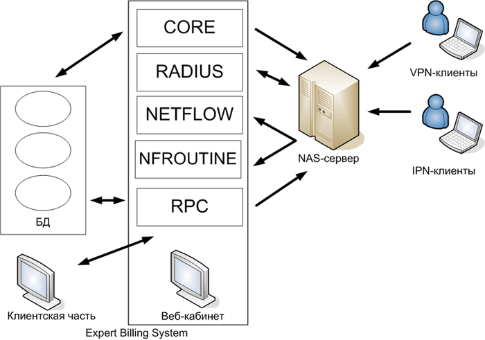

|
Схема работы системы |
Top Previous Next |
|
Expert Billing System построена на базе устоявшейся схемы с разделёнными модулями авторизации, сбора статистики и ядром, отвечающим за логику работы системы. Структура биллинг-системы позволяет её легко расширять за счёт установки дополнительных RADIUS-серверов и коллекторов статистики.

Expert Billing System состоит из серверной и клиентской частей. Серверная часть включает следующие компоненты:
Модуль CORE – ядро биллинга, отвечающее за бизнес-логику (тарификация, списание средств, управление состоянием пользователей и др.)
Модуль RADIUS предназначен для взаимодействия с сервером доступа по протоколу RADIUS.
Модуль NETFLOW используется в качестве коллектора статистики по протоколу NetFlow.
Модуль NFROUTINE производит агрегацию и обработку собранной модулем NETFLOW информации о сетевой активности пользователей.
Модуль RPC предоставляет интерфейс для доступа к ядру биллинга извне (оболочка для администрирования, интерфейс кассира, некотоыре функции веб-кабинета).
Веб-кабинет пользователя представляет собой веб-приложение, написанное на языке Python с использованием веб-фреймворка Django. В своем веб-кабинете каждый пользователь может контролировать состояние своей учетной записи (баланс, список активных услуг, различная статистика и др.), а также производить смену пароля и активировать карты экспресс-оплаты.
Клиентская часть Expert Billing System включает следующие компоненты:
Оболочка для администрирования Expert Billing Admin является основным интерфейсом администратора для управления Expert Billing System, она выполнена в качестве отдельного приложения.
Интерфейс кассира также является отдельным приложением, которое позволяет управлять счетами пользователей (списание средств, пополнение счета и др.), а также переводить пользователей на другие тарифные платы.
This help file was created with an unregistered evaluation copy of Help & Manual. © EC Software. All rights reserved. This message will not appear if you compile this help file with the registered version of Help & Manual. |